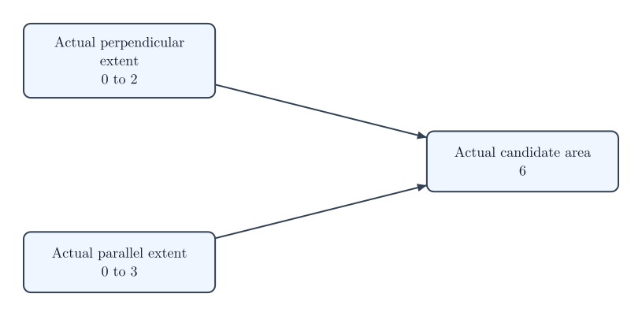
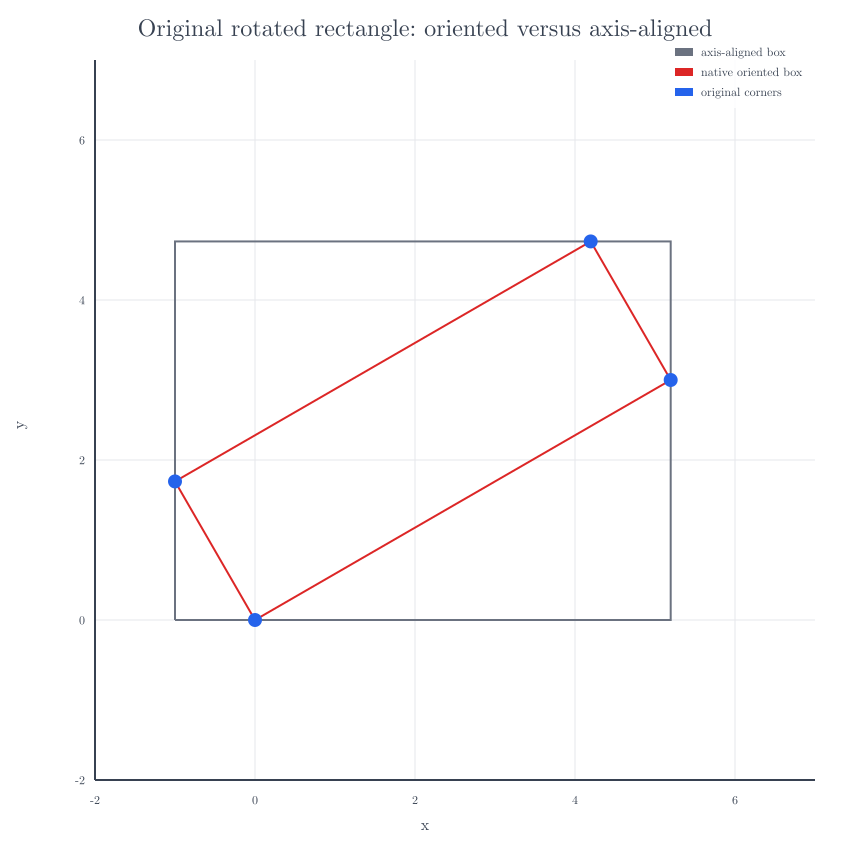
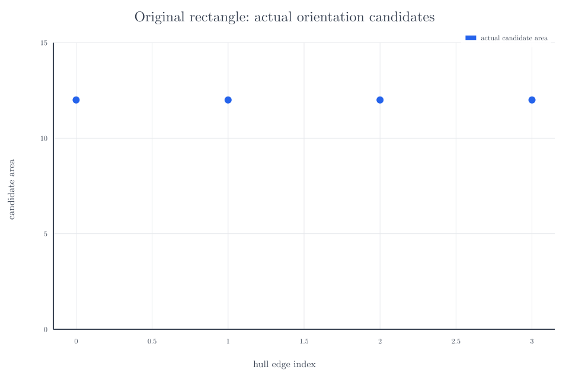
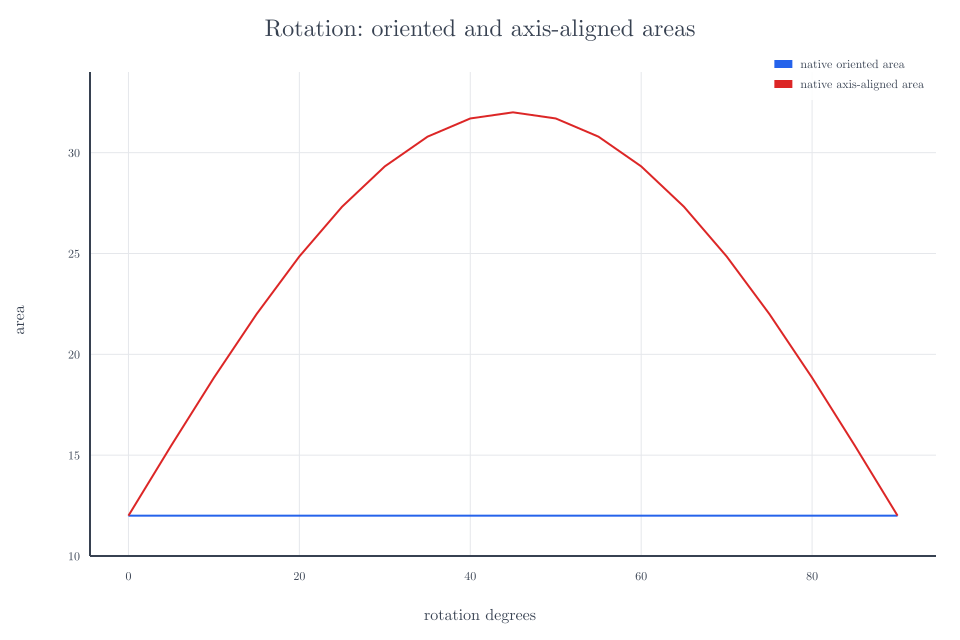

Minimum-area bounding rectangles
Abstract
Find a rectangle of smallest area containing a planar point set while allowing its orientation to vary. We derive hull-edge projection candidates, inspect their actual extents, retain the original rotated6-by2 rectangle, and check rotation behavior. The native implementation reprojects the hull at every orientation, so its scan is quadratic in hull size rather than the linear rotating-calipers walk.
Reduce the search to hull-edge orientations
Interior points cannot change a supporting line, so first compute the convex hull. A minimum-area enclosing rectangle of a nondegenerate polygon has a side aligned with a hull edge. For an outgoing unit edge u and its perpendicular v, project hull points relative to its origin. The enclosing rectangle in that orientation has widths equal to the two projection ranges.
Testing all hull edges therefore suffices in exact geometry. The native hull uses exact-sign orientation predicates; projected extents, areas and reconstructed corners use floating-point arithmetic. The orientation theorem does not turn floating rounding into an exact area certificate. The producer retains the first strict area improvement, so mathematically tied orientations can differ slightly numerically.
A small right triangle
For points(0,0),(3,0),(0,2), the horizontal candidate has width3, height2 and area6. Other hull orientations may tie. The diagram and table show the actual first candidate extents and actual selection decisions, using the canonical producer's own hull order.
#include <dm/dm.hpp>
int main() {
std::filesystem::create_directories("build");
auto t =
dm::geometry::minimum_bounding_rectangle_trace({{0, 0}, {3, 0}, {0, 2}});
auto &c = t.candidates.front();
dm::graphics::Diagram d;
d.node("u", {0, -2},
std::format("Actual parallel extent\n{} to {}", c.min_u, c.max_u)).node("v", {0, 2}, std::format("Actual perpendicular extent\n{} to {}", c.min_v, c.max_v)).node("a", {8, 0}, std::format("Actual candidate area\n{}", c.area)).edge("u", "a").edge("v", "a");
std::print("| hull edge | min u | max u | min v | max v | actual area | strict improvement |\n| ---: | " "---: | ---: | ---: | ---: | ---: | --- |\n");
for (auto &r : t.candidates)
std::print("| {} | {} | {} | {} | {} | {} | {} |\n", r.edge, r.min_u,
r.max_u, r.min_v, r.max_v, r.area, r.selected);
d.save_svg("build/rectangle_tiny.svg");
}| hull edge | min u | max u | min v | max v | actual area | strict improvement |
|---|---|---|---|---|---|---|
| 0 | 0 | 3 | 0 | 2 | 6 | true |
| 1 | 0 | 3.6055512754639896 | -0 | 1.6641005886756874 | 6.000000000000001 | false |
| 2 | 0 | 2 | 0 | 3 | 6 | false |

Retain the original rotated6-by2 rectangle
The original four corners are generated by rotating an origin-anchored6-by2 rectangle through30degrees. Its true area is12. The axis-aligned box has area12+40 sin(theta)cos(theta), approximately29.3205 here; it includes extra empty space. The next plot overlays both boxes in equal-scale geometry. Thin report loops only map returned coordinates into plot series; the generator and rectangle algorithm live in the library.
#include <dm/dm.hpp>
int main() {
std::filesystem::create_directories("build");
auto points = dm::geometry::bounding_rectangle_demo();
auto r = dm::geometry::minimum_bounding_rectangle(points);
auto b = dm::geometry::bounding_box(points);
std::vector<double> x, y, rx, ry;
for (auto q : points) {
x.push_back(q.x);
y.push_back(q.y);
}
for (auto q : r.corners) {
rx.push_back(q.x);
ry.push_back(q.y);
}
rx.push_back(rx.front());
ry.push_back(ry.front());
std::print("| box | actual area |\n| --- | ---: |\n| oriented | {} |\n| axis aligned | {} |\n",
r.area, (b.max.x - b.min.x) * (b.max.y - b.min.y));
auto p = dm::graphics::RPlot::create();
p.line({b.min.x, b.max.x, b.max.x, b.min.x, b.min.x},
{b.min.y, b.min.y, b.max.y, b.max.y, b.min.y}, "axis-aligned box",
{107, 114, 128}, 2).line(rx, ry, "native oriented box",
{220, 38, 38}, 2).points(x, y,
"original corners",
{37, 99, 235}, 7).size(850, 850).margins(95, 35, 60, 70).x_limits(-2, 7).y_limits(-2, 7).title("Original rotated rectangle: oriented versus axis-aligned").x_label("x").y_label("y").save_svg("build/rectangle_original.svg");
}| box | actual area |
|---|---|
| oriented | 12 |
| axis aligned | 29.32050807568877 |

Inspect the actual orientation scan
Each hull edge causes a complete pass over all hull vertices. For a four-vertex rectangle, the producer executes sixteen point projections and four candidate decisions. Tiny area differences reflect floating rounding among tied exact solutions. A selected flag means improvement at that moment, not that every selected candidate is the final answer.
#include <dm/dm.hpp>
int main() {
std::filesystem::create_directories("build");
auto t =
dm::geometry::minimum_bounding_rectangle_trace(dm::geometry::bounding_rectangle_demo());
std::vector<double> x, y;
std::print("Actual projections: {}. Capture units: {}.\n\n| actual hull edge | candidate area | strict " "improvement |\n| ---: | ---: | --- |\n",
t.projections, t.captured_entries);
for (auto &r : t.candidates) {
x.push_back(r.edge);
y.push_back(r.area);
std::print("| {} | {:.17g} | {} |\n", r.edge, r.area, r.selected);
}
auto p = dm::graphics::RPlot::create();
p.points(x, y, "actual candidate area", {37, 99, 235}, 6).y_limits(0, 15).title("Original rectangle: actual orientation candidates").x_label("hull edge index").y_label("candidate area").save_svg("build/rectangle_candidates.svg");
}Actual projections: 16. Capture units: 16.
| actual hull edge | candidate area | strict improvement |
|---|---|---|
| 0 | 12 | true |
| 1 | 12 | false |
| 2 | 12.000000000000005 | false |
| 3 | 12.000000000000004 | false |

Check rotation behavior and state the cost
Across the finite angle sweep below, the oriented area should remain12 to rounding, while the axis-aligned area changes with rotation. This checks a known geometric family rather than inferring a universal optimum from an image. No external dataset is necessary for this geometry kernel.
With n input points and h hull vertices, canonical hull construction costs O(n log n), followed by h squared point projections. The scan is O(h squared), not the O(h) support-pointer version of rotating calipers. Driver and captured history are O(n+h). Trace quota units are original points, hull points, candidate records and four final corners; default1000000, zero disables. Invalid nonfinite coordinates or a hull with fewer than three vertices throw. Finite but unrepresentable projection geometry, area or corners also throws.
#include <dm/dm.hpp>
int main() {
std::filesystem::create_directories("build");
std::vector<double> x, oriented, aligned;
std::print("| angle degrees | native oriented area | native axis-aligned area |\n| ---: | ---: | ---: " "|\n");
for (int degree = 0; degree <= 90; degree += 5) {
auto points =
dm::geometry::bounding_rectangle_demo(6, 2,
degree * std::numbers::pi /
180);
auto r = dm::geometry::minimum_bounding_rectangle(points);
auto b = dm::geometry::bounding_box(points);
double a = (b.max.x - b.min.x) * (b.max.y - b.min.y);
x.push_back(degree);
oriented.push_back(r.area);
aligned.push_back(a);
std::print("| {} | {} | {} |\n", degree, r.area, a);
}
auto p = dm::graphics::RPlot::create();
p.line(x, oriented, "native oriented area", {37, 99, 235}, 2).line(
x, aligned, "native axis-aligned area", {220, 38, 38}, 2).title(
"Rotation: oriented and axis-aligned areas").x_label("rotation degrees").y_label("area").save_svg("build/rectangle_rotation.svg");
}| angle degrees | native oriented area | native axis-aligned area |
|---|---|---|
| 0 | 12 | 12 |
| 5 | 12 | 15.47296355333861 |
| 10 | 12 | 18.840402866513372 |
| 15 | 12 | 22 |
| 20 | 12 | 24.85575219373079 |
| 25 | 11.999999999999998 | 27.320888862379558 |
| 30 | 12 | 29.32050807568877 |
| 35 | 11.999999999999998 | 30.793852415718167 |
| 40 | 11.999999999999996 | 31.696155060244156 |
| 45 | 11.999999999999998 | 32 |
| 50 | 11.999999999999996 | 31.696155060244163 |
| 55 | 12.000000000000005 | 30.79385241571817 |
| 60 | 12.000000000000002 | 29.32050807568878 |
| 65 | 11.999999999999996 | 27.320888862379558 |
| 70 | 11.999999999999996 | 24.855752193730787 |
| 75 | 12 | 22 |
| 80 | 11.999999999999998 | 18.840402866513376 |
| 85 | 11.999999999999998 | 15.472963553338607 |
| 90 | 12 | 12.000000000000004 |

Conclusion and references
Actual projected extents explain each candidate and the original area savings. The orientation theorem justifies the candidate set, while explicit implementation counts establish the quadratic hull scan. Floating projections, representability guards and strict comparison rules remain part of the result's practical limits.
Freeman and Shapira, Determining the minimum-area encasing rectangle for an arbitrary closed curve (1975) gives the hull-edge orientation result. This implementation scans orientations directly rather than maintaining moving calipers.
Verification
The ten-report batch passes95 CTest cases,31 directly instrumented ASan/UBSan
cases,83 compiled and executed public examples,363/363 scoped documentation
definitions and ten representative hovers. Independent Python integer
arithmetic, MT19937-64/variation replay, graph sets, analytic interpolation,
circle boundary enumeration and actual-sample integration reconstruction agree
on915459 captured records. All six original RMS summaries are separately checked
using96 native MISER estimates and1600000 independently reproduced
plain-comparator points. Frozen valid-input comparisons include the original
seeded solver paths and full MOEA/D fronts. Ten checkout headers and ten
identically installed development headers compile independently, and an
installed-header native consumer links and runs. Each report has four executed
complete programs, four reviewed native figures and both HTML/Markdown exports
with computed-result and image-byte checks. This is a scoped native API audit,
not an installation claim for every language binding. Receipts:
build/mepml-conversion/batch-234-243/.